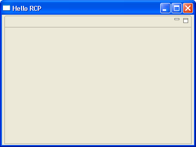

| Eclipse Article |

The Rich Client Platform (RCP) is an exciting new way to build Java applications that can compete with native applications on any platform. This tutorial is designed to get you started building RCP applications quickly. It has been updated for Eclipse 3.1.
By Ed Burnette, SAS
July 28, 2004 (Updated July 2005 for Eclipse 3.1)
Try this experiment: Show Eclipse to some friends or co-workers who haven't seen it before and ask them to guess what language it is written in. Chances are, they'll guess VB, C++, or C#, because those languages are used most often for high quality client side applications. Then watch the look on their faces when you tell them it was created in Java, especially if they are Java programmers.
Because of its unique open source license, you can use the technologies that went into Eclipse to create your own commercial quality programs. Before version 3.0, this was possible but difficult, especially when you wanted to heavily customize the menus, layouts, and other user interface elements. That was because the "IDE-ness" of Eclipse was hard-wired into it. Version 3.0 introduced the Rich Client Platform (RCP), which is basically a refactoring of the fundamental parts of Eclipse's UI, allowing it to be used for non-IDE applications. Version 3.1 updated RCP with new capabilities, and, most importantly, new tooling support to make it easier to create than before.
If you want to cut to the chase and look at the code for this part you can find it in the accompanying zip file. Otherwise, let's take a look at how to construct an RCP application.
RCP applications are based on the familiar Eclipse plug-in architecture, (if it's not familiar to you, see the references section). Therefore, you'll need to create a plug-in to be your main program. Eclipse's Plug-in Development Environment (PDE) provides a number of wizards and editors that take some of the drudgery out of the process. Select File > New > Project > Plug-in Development > Plug-in Project to bring up the Plug-in Project wizard. On the subsequent pages, enter a Project name such as org.eclipse.ui.tutorials.rcp.part1, indicate you want a Java project, select the version of Eclipse you're targetting, and enable the option to Create an OSGi bundle manifest. Then click Next.
 Beginning in Eclipse 3.1 you will get best results by using the OSGi bundle manifest.
In contrast to previous versions, this is now the default.
Beginning in Eclipse 3.1 you will get best results by using the OSGi bundle manifest.
In contrast to previous versions, this is now the default.
In the next page of the Wizard you can change the Plug-in ID and other parameters. Of particular importance is the question, "Would you like to create a rich client application?". Select Yes. The generated plug-in class is optional but for this example just leave all the other options at their default values. Click Next to continue.
Starting with Eclipse 3.1, several templates have been provided to make creating an RCP application a breeze. We'll use the simplest one available and build up from there. Make sure the option to Create a plug-in using one of the templates is enabled, then select the Hello RCP template. This is RCP's equivalent of "Hello, world". Click Finish to accept all the defaults and generate the project. Eclipse will open the Plug-in Manifest Editor. The Plug-in Manifest editor puts a friendly face on the various configuration files that control your RCP application.
 If you get a dialog asking if Eclipse can switch to the Plug-in Development
Perspective click Remember my decision and select Yes (this is optional).
If you get a dialog asking if Eclipse can switch to the Plug-in Development
Perspective click Remember my decision and select Yes (this is optional).
Trying out RCP applications used to be somewhat tedious. You had to create a custom launch configuration, enter the right application name, and tweak the plug-ins that were included. Thankfully the PDE keeps track of all this now. All you have to do is click on the Launch an Eclipse Application button in the Plug-in Manifest editor's Overview page. You should see a bare-bones Workbench start up (see Figure 1).
Figure 1. World's simplest RCP application.
In Eclipse, features are just collections of plug-ins. Features are optional but recommended because you'll need one if you want to later use Eclipse's Automatic Update Manager capabilities, or if you want to export your application with JNLP. To create a feature, select File > New > Project > Plug-in Development > Feature Project. The convention is to use the same name as your plug-in project with "-feature" appended, so call the feature org.eclipse.ui.tutorials.rcp.part1-feature. Click Next to get to the Feature Properties page, and Next again to get to the Referenced Plug-ins page. Put a check mark next to org.eclipse.ui.tutorials.rcp.part1 . Click Finish to generate the feature.
In Eclipse terms a product is everything that goes with your application, including all the other plug-ins it depends on, a command to run the application (called the native launcher), and any branding (icons, etc.) that make your application distinctive. Although as we've just seen you can run a RCP application without defining a product, having one makes it a whole lot easier to run the application outside of Eclipse. This is one of the major innovations that Eclipse 3.1 brought to RCP development.
Some of the more complicated RCP templates already come with a product defined, for example the one called "RCP Application with an Intro" and "RCP Mail". More templates will likely be added with each release so this list may change. The Hello RCP template does not so we'll have to make one.
In order to create a product you first have to add a product configuration file to the project. Right click on the plug-in project and select New > Product Configuration. Then enter a file name for this new configuration file, such as part1.product. Select the option to Use a launch configuration, and select Eclipse Application from the list. (Note if you've been doing other plug-in development in the current workspace you may see a different configuration name here. Pick the one associated with the RCP plug-in you ran earlier.) Then click Finish. The Product Configuration editor will open. This editor lets you control exactly what makes up your product including all its plug-ins and branding elements.
In the Overview page, type in the Product Name, for example RCP Tutorial 1. Select the option that says This project configuration is based on features. Then select the New... button to create a new product. Type in or browse to the defining plug-in (org.eclipse.ui.tutorials.rcp.part1). Enter a Product ID such as product, and for the Product Application select org.eclipse.ui.tutorials.rcp.part1.application. Click Finish to define the product.
 In Eclipse 3.1 if you create the product before filling in the
Product Name you may see an error appear in the Problems view.
The error will go away when you Synchronize (see below).
This is a known bug that will be fixed in future versions.
In Eclipse 3.1 if you create the product before filling in the
Product Name you may see an error appear in the Problems view.
The error will go away when you Synchronize (see below).
This is a known bug that will be fixed in future versions.
Back in the Product Configuration editor's Overview page, Click on the product configuration link or on the tab for the Configuration page and add both your feature (org.eclipse.ui.tutorials.rcp.part1_feature) and the RCP feature (org.eclipse.rcp). Then go back to the Overview page and press Ctrl+S or File > Save to save your work.
 If your application needs to reference plug-ins outside of the
basic RCP plug-ins, then you'll need to either include them in your
feature or make up a new feature to contain them.
If your application needs to reference plug-ins outside of the
basic RCP plug-ins, then you'll need to either include them in your
feature or make up a new feature to contain them.
At this point you should test out the product to make sure it runs correctly. In the Testing section of the Overview page, click Synchronize then click on Launch the product. If all goes well, the application should start up just like before.
The whole point of all this is to be able to run stand-alone applications without the user having to know anything about the Java and Eclipse code being used under the covers. For a real application you may want to provide a self-contained executable generated by an install program like InstallShield. That's really beyond the scope of this article though, so we'll do something simpler.
We need to create a simplified version of the Eclipse install directory because the Eclipse plug-in loader expects things to be in a certain layout. This directory has to contain the native launcher program, config files, and all the features and plug-ins required by the product. Thankfully, we've given the PDE enough information that it can put all this together for us now.
In the Exporting section of the Product Configuration editor (not the Plug-in Manifest editor), click the link to open the Eclipse product export wizard. Change the root directory to something else like RcpTutorial1. Then select the option to deploy into a Directory, and enter a directory path to a temporary (scratch) area such as C:\Deploy. Check the option to Include source code if you're building an open source project. Press Finish to build and export the program.
The application is now ready to run outside Eclipse. When you're done you should have a structure that looks like this:
RcpTutorial1
| .eclipseproduct
| eclipse.exe
| startup.jar
+--- configuration
| | config.ini
+--- plugins
| | org.eclipse.core.commands_3.1.0.jar
| | org.eclipse.core.expressions_3.1.0.jar
| | org.eclipse.core.runtime_3.1.0.jar
| | org.eclipse.help_3.1.0.jar
| | org.eclipse.jface_3.1.0.jar
| | org.eclipse.osgi_3.1.0.jar
| | org.eclipse.rcp_3.1.0.jar
| | org.eclipse.swt.win32.win32.x86_3.1.0.jar
| | org.eclipse.swt_3.1.0.jar
| | org.eclipse.ui.tutorials.rcp.part1_1.0.0.jar
| | org.eclipse.ui.workbench_3.1.0.jar
| | org.eclipse.ui_3.1.0.jar
| | org.eclipse.update.configurator_3.1.0.jar
+--- features
+--- org.eclipse.ui.tutorials.rcp.part1_feature_1.0.0
+--- org.eclipse.rcp_3.1.0
 Starting in Eclipse 3.1 the recommended format for plug-ins is
a jar file. Among other things this saves disk space in
the deployed application.
Starting in Eclipse 3.1 the recommended format for plug-ins is
a jar file. Among other things this saves disk space in
the deployed application.
 Previous versions of this tutorial recommended using a batch file
or shell script to invoke your RCP program.
It turns out this is a bad idea because you will not be able to
fully brand your application later on.
For example, you won't be able to add a splash screen.
So just stick with the native launcher.
Previous versions of this tutorial recommended using a batch file
or shell script to invoke your RCP program.
It turns out this is a bad idea because you will not be able to
fully brand your application later on.
For example, you won't be able to add a splash screen.
So just stick with the native launcher.
Give it a try! Execute the native launcher outside Eclipse and watch the application come up. The name of the launcher ("eclipse" by default) is controlled by branding options in the product configuration.
After I wrote the original version of this tutorial I started getting mail from people who couldn't run it for one reason or another. Much of this feedback went into the design of new versions of the PDE so that information is now obsolete. Therefore I'm leaving the troubleshooting section blank for now. If you have any problems running your application let me know and I'll add the solution here for the next person to see.
If you are migrating a plug-in from version 2.1 to version 3.1 there are number of issues covered in the on-line documentation that you need to be aware of. If you're making the smaller step from 3.0 to 3.1, the number of differences is much smaller. See the References section for more information.
 One word of advice: be careful not to duplicate any information
in both plug-in.xml and MANIFEST.MF.
Typically this would not occur unless you are converting an older
plug-in that did not use MANIFEST.MF into one that does,
and even then only if you are editing the files by hand instead of
going through the PDE.
One word of advice: be careful not to duplicate any information
in both plug-in.xml and MANIFEST.MF.
Typically this would not occur unless you are converting an older
plug-in that did not use MANIFEST.MF into one that does,
and even then only if you are editing the files by hand instead of
going through the PDE.
In part 1 of this tutorial, we looked at what is necessary to create a bare-bones Rich Client application. The next part will delve into the classes created by the wizards such as the WorkbenchAdvisor class. All the sample code for this part may be found in the accompanying zip file.
ref: bug 104146
IBM is trademark of International Business Machines Corporation in the United States, other countries, or both.
Java and all Java-based trademarks and logos are trademarks or registered trademarks of Sun Microsystems, Inc. in the United States, other countries, or both.
Microsoft and Windows are trademarks of Microsoft Corporation in the United States, other countries, or both.
Other company, product, and service names may be trademarks or service marks of others.